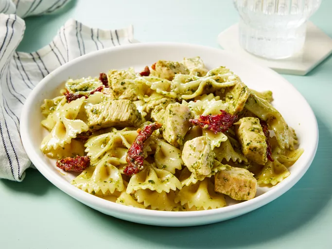

Chicken Pesto Pasta

Description
This chicken pesto pasta is easy and delicious. Serve with crusty bread and salad for a quick dinner.
Use as much or as little pesto sauce as you like. Using homemade pesto will taste even better, but it adds to prep time. Enjoy!
Calories & Macros
Per Meal: 328 Calories
17g P | 43g C | 10g F
Makes 8 servings
Ingredients
- 1 (450g) package bow tie pasta
- 1 tsp olive oil
- 2 cloves of garlic, minced
- 2 chicken breasts, cut into bite sized pieces
- red pepper flakes
- half a cup of pesto sauce
- half a cup of oil-packed sun-dried tomatoes, drained and cut into strips
Directions
- Bring a large pot of lightly salted water to a boil. Add pasta and cook until al dente, 8 to 10 minutes; drain.
- Heat oil in a large skillet over medium heat. Sauté garlic until tender.
- Stir in chicken and season with red pepper flakes. Cook until chicken is golden and cooked through.
- Combine pasta, chicken, pesto, and sun-dried tomatoes in a large bowl; toss to coat evenly.